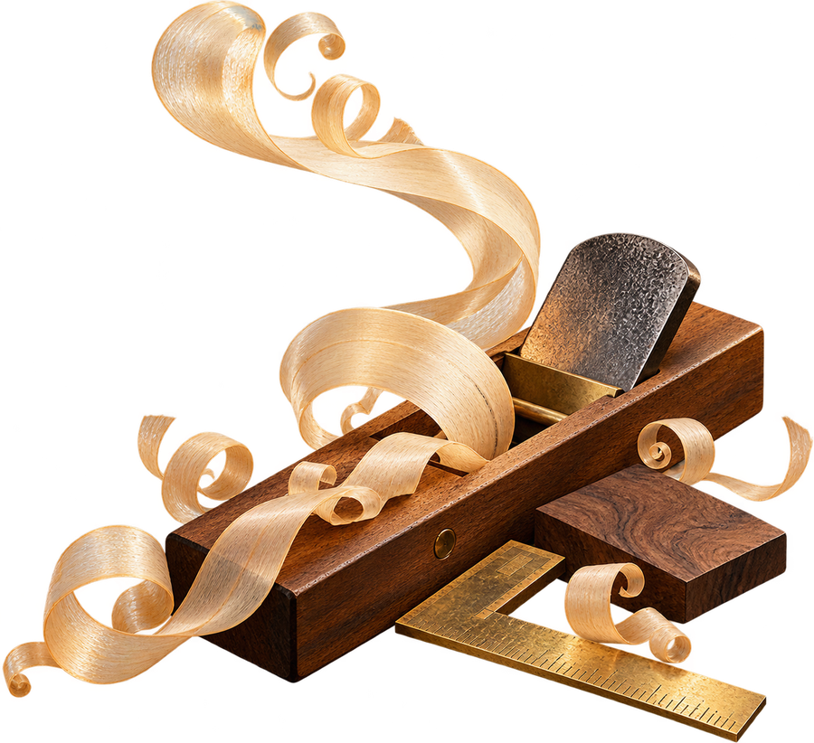

写真 02
趣味・大切な品などの写真
ご提供後に差し込みます
仕事の基準は、見えない場所に
製作の基準：見えない部分まで丁寧に。木の性質を見て、長く使ってもらえる家具を作ることが喜びでした。
人物・経歴はすべて架空です。装飾は生成イラスト、ご本人の写真は未提供の枠で示しています。
A06 仕事の誇り
人生の履歴書
手を動かす。心を込める。

あおやま はるお
〜 私が歩んだ約80年の物語 〜
一人の人生には、一冊の本になるほどの物語がある。
木と向き合い、人と暮らし、今日まで。
物語をひらくこの手が、覚えている。
紙飛行機から、長く使える家具へ。手を動かした時間をたどります。
趣味・大切な品などの写真
ご提供後に差し込みます
製作の基準：見えない部分まで丁寧に。木の性質を見て、長く使ってもらえる家具を作ることが喜びでした。
記憶の下地：川と田畑のある町。水音と土の匂いが、ものづくり以前の私の原点でした。
最初の試作：紙飛行機と小さな棚。直しては試す遊びから、工夫する手つきを覚えました。
学んだ手順：すぐ答えを求めず、自分の手で確かめる。先生の言葉を、仕事にも持ち込みました。
仕事のあとに戻る場所：家族の食卓。何気ない話と笑い声が、一日を受け止めてくれました。
新しい作業：庭を整えること。仕事を終えた手は、暮らしのそばで季節を見つけるようになりました。
身近な風景に囲まれて育つ。
人との出会いから、少しずつ世界が広がる。
その年の世の中：東京オリンピック開催 日本オリンピック委員会
目の前のことに向き合いながら歩む。
その年の世の中：大阪で日本万国博覧会開催 外務省
暮らしの中に、新しい楽しみを見つける。
その年の世の中：元号が平成から令和へ 内閣府
感謝と小さな希望を胸に、時を重ねる。
仕事でなくても、つくる喜びは続いてゆく。
REPAIR / 暮らしを直す
修理の記録：古い椅子を直して家族へ。「まだまだ使えるね」の声が、何よりの仕上がり確認でした。
日常の手入れ：木の道具を整え、草花を育てる。手を動かすうち、気持ちも自然と落ち着きます。
旅・思い出などの写真
ご提供後に差し込みます
作業場の外へ：列車で海の町を訪ねました。車窓、駅弁、波の音、交わした会話を覚えています。
うまくいかない日も、支え合いながら。
歩みの中で覚えたこと
うまく仕上がらない日にも、人の支えがありました。ひとりで抱え込まないことも、大切にしたいと思います。
残したいのは、技よりも、姿勢。
引き継ぎたいのは、肩書きより丁寧さ。目の前の一つを大切にする姿勢を、手渡せたら嬉しいです。
朝の段取り：庭を眺め、散歩や読書、道具の手入れへ。今は自分の歩幅で、一日を組み立てています。
ともにつくった人たちへ。家族、仲間、友人の存在があって、今日の私があると感じます。
次の計画：列車で、まだ知らない町へ。家族や友人と過ごす思い出も、これから作っていきたいのです。